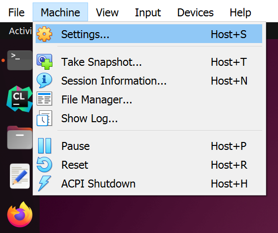
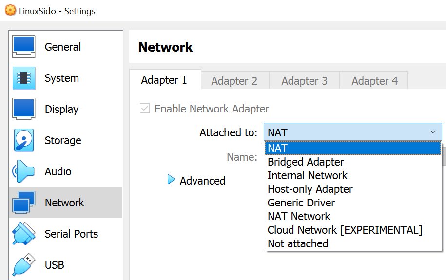
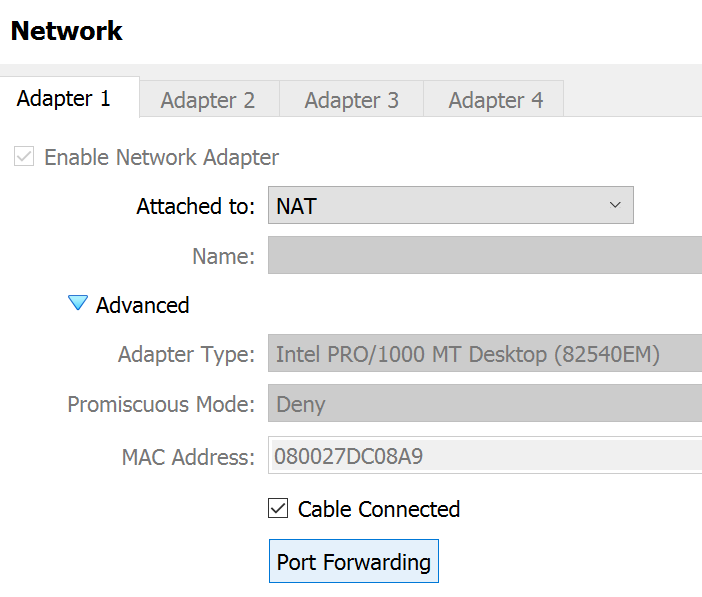
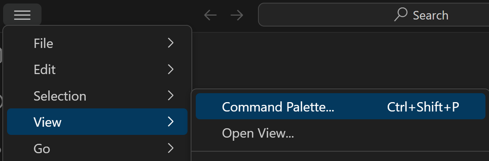
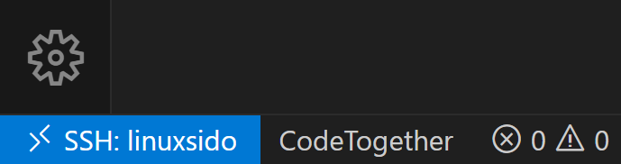
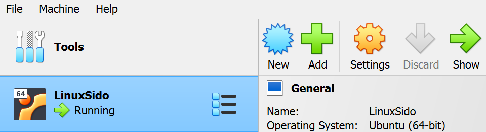

Last updated on
SSH into VirtualBox VM with VS Code
Open VirtualBox and Start your VM, then open a terminal in your VM and follow the steps below
Enable SSH on the VM
Make sure SSH is Running
Check if SSH server is active & running
systemctl status sshIf not running then enable
systemctl enable ssh --nowIf not installed then install SSH
sudo apt install openssh-serverFind port number used (usually 22)
$ sudo ss -ntlp | grep -i ssh
LISTEN 0 128 0.0.0.0:22 0.0.0.0:* users:(("sshd",pid=787,fd=3))
LISTEN 0 128 [::]:22 [::]:* users:(("sshd",pid=787,fd=4))Firewall
These steps may not be entirely necessary but it can avoid SSH being blocked by your firewall or other similar issue.
Install Firewalld if not available
sudo apt-get install firewalldCheck if Firewalld is running
firewall-cmd --stateIf not, you can start it using
systemctl start firewalldCheck if SSH service is enabled in your firewall
firewall-cmd --zone=public --list-servicesIf it is not present you can add it using
firewall-cmd --zone=public --add-service=ssh --permanent
firewall-cmd --reloadIf your SSH port (found previously) is not 22, manually allow that port. For example if the port is 5022, use the following commands
firewall-cmd --add-port=5022/tcp --zone=public --permanent
firewall-cmd --reload
firewall-cmd --zone=public --list-ports
5022/tcpSSH Settings on the VirtualBox VM
While on your VM, open the machine settings (no need to power it off)
 Settings" class="medium">
Set your adapter to NAT (if it is not already the case)
 Adapter 1 > NAT" class="medium">
Click on Advanced and Port Forwarding
 Port Forwarding" class="medium">
Add a rule and set the port forwarding details

- Name : any
- Protocol : TCP (protocol used by SSH)
- Host IP : empty
- Host Port : any from 0-65535 (preferably above 1023)
- Guest IP : empty
- Guest Port : SSH port number found previously (usually 22)
Refresh network configuration in the VM by turning it off and on
nmcli networking off
nmcli networking onIf nmcli is not installed, you can install it first using
sudo apt install network-managerVerify your IP Address
ip a$ ip a
1: lo: mtu 65536 qdisc noqueue state UNKNOWN group default qlen 1000
link/loopback 00:00:00:00:00:00 brd 00:00:00:00:00:00
inet 127.0.0.1/8 scope host lo
valid_lft forever preferred_lft forever
inet6 ::1/128 scope host
valid_lft forever preferred_lft forever
2: enp0s3: mtu 1500 qdisc fq_codel state UP group default qlen 1000
link/ether 08:00:27:dc:08:a9 brd ff:ff:ff:ff:ff:ff
inet 10.0.2.15/24 brd 10.0.2.255 scope global dynamic noprefixroute enp0s3
valid_lft 80381sec preferred_lft 80381sec
inet6 fe80::dec4:484c:cf97:9f5c/64 scope link noprefixroute
valid_lft forever preferred_lft forever
3: docker0: mtu 1500 qdisc noqueue state DOWN group default
link/ether 02:42:a8:a1:1c:e0 brd ff:ff:ff:ff:ff:ff
inet 172.17.0.1/16 brd 172.17.255.255 scope global docker0
valid_lft forever preferred_lft forever For a NAT network, you will always get 10.0.2.15/24 IP address, so this means our configuration is complete.
Open a terminal in your host machine (outside your VM) and verify the SSH connectivity (you can also do this using PuTTY or similar if you wish)
- Port number : the one you set as Host Port in the VM port forwarding settings
- VM Username : your username on the VM
- VM IP Address :
127.0.0.1(the loopback IP address)
ssh -p <port number> <vm username>@127.0.0.1If the above attempt works, you have successfully set up SSH for your VM. You can now adapt this in order to SSH connect easily via VS Code rather than the command prompt or other terminal.
SSH from VS Code
Updating the SSH config file
First, find your .ssh folder. It is usually at C:\Users\<username>\.ssh
Then open the config file inside the .ssh folder, if it is already present. Otherwise, create it.
The name of this file should be exactly config, with no extension
Open the config file in a text editor and write the following, then save.
Host <host name>
HostName 127.0.0.1
User <username>
Port 3000- Host : any name for your VM (you will use this to SSH connect to your VM later)
- HostName :
127.0.0.1(the loopback IP address) - User : your VM username
- Port : the one you set as Host Port in the VM port forwarding settings
You have succesfully created an alias for this remote connection !
With the config file set up, you can also now SSH into your VM from any terminal on your host machine using just the host name you have set previously !
You can now write ssh <host name> instead of ssh -p <port number> <vm username>@<vm IP address>
Connecting through VS Code
Open VS Code and press CTRL+Shift+P or View > Command Palette
 Command Palette" class="medium">
In the search bar that appears, search for Remote-SSH: Connect to Host...

A list of all the Hosts in your config file should appear. Select your VM in the list. You will be prompted to enter your VM password, and will get connected via SSH to your VM.
You can verify you are indeed connected to your VM by checking if you have this kind of indication saying SSH: <host name> in the bottom left of your VS Code window.

Now that you are connected, when you select Open Folder in VS Code you will be able to navigate through your VM filesystem, and when you open a Terminal in VS Code, it will be a terminal in your VM.
Your VM has to be running in order for you to be able to be connected to it via SSH. Any time you wish to connect this way through VS Code, simply open VirtualBox and start your VM, then you can connect to it as long as it remains running.

Adding an SSH Key
Currently you have to enter your VM password whenever connecting to your VM, whether in the terminal or via VS Code. You can avoid this by using an SSH Key !
If you have never generated an SSH Key on your PC, generate a new one using the following command :
ssh-keygen -t ed25519 -C "your_email@example.com"Find your public key. It should be located in the same .ssh folder as previously (C:\Users\<username>\.ssh on Windows or /home/<username>/.ssh on Linux).
Open the file called id_ed25519.pub in a text editor and copy it's content.
Connect to your VM via SSH using VS Code. In your /home/<username> folder, create a folder called .ssh, and inside this folder
create a file called authorized_keys. In this file, paste your SSH public key.
You have now added your public key to your VM ! You should now be able to connect to your VM from your computer without using your password.